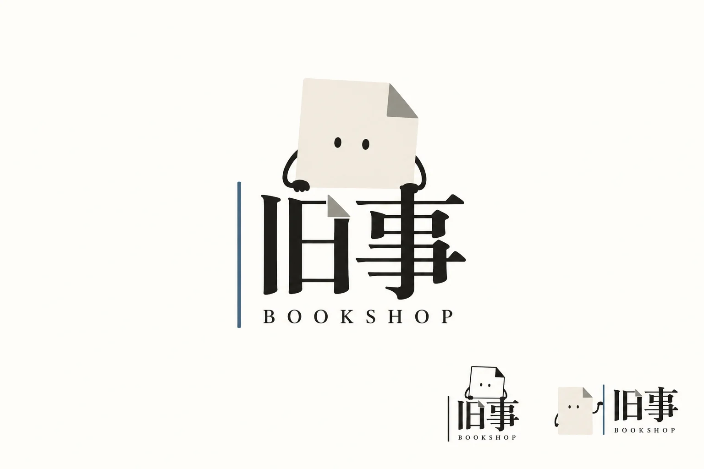
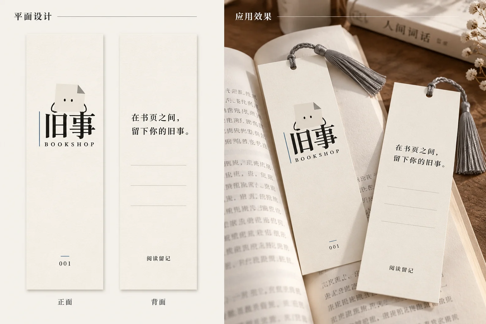
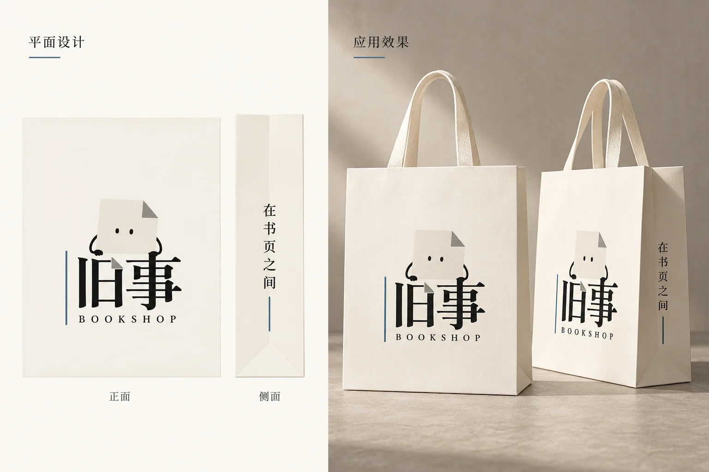
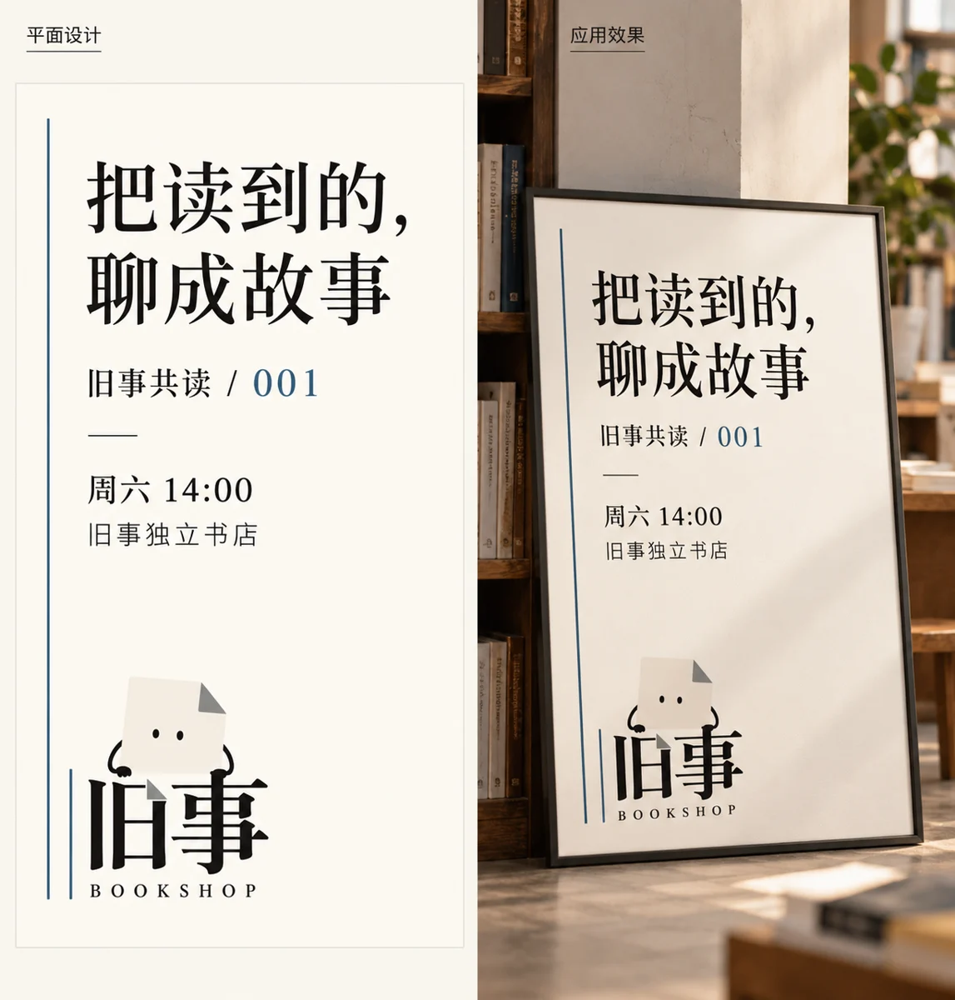
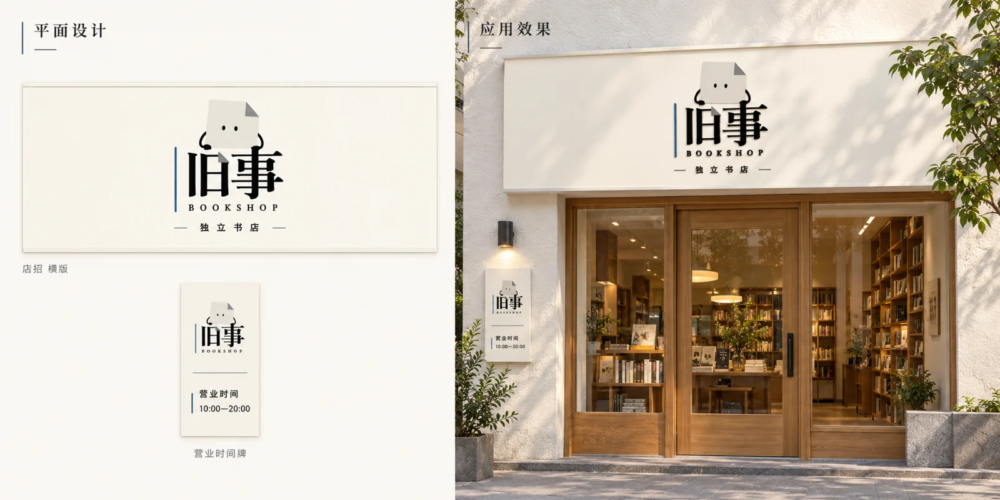

旧事独立书店
围绕人文阅读设计书店的品牌识别，从折角、旁注与纸张中提取视觉元素。

标志与版式

让书页角色「页页」从字标上方探出，建立亲切的识别形象。用纸白与墨黑作为主要配色，将书页的留白与旁注转化为物料版式。
品牌应用




围绕人文阅读设计书店的品牌识别，从折角、旁注与纸张中提取视觉元素。

让书页角色「页页」从字标上方探出，建立亲切的识别形象。用纸白与墨黑作为主要配色，将书页的留白与旁注转化为物料版式。



